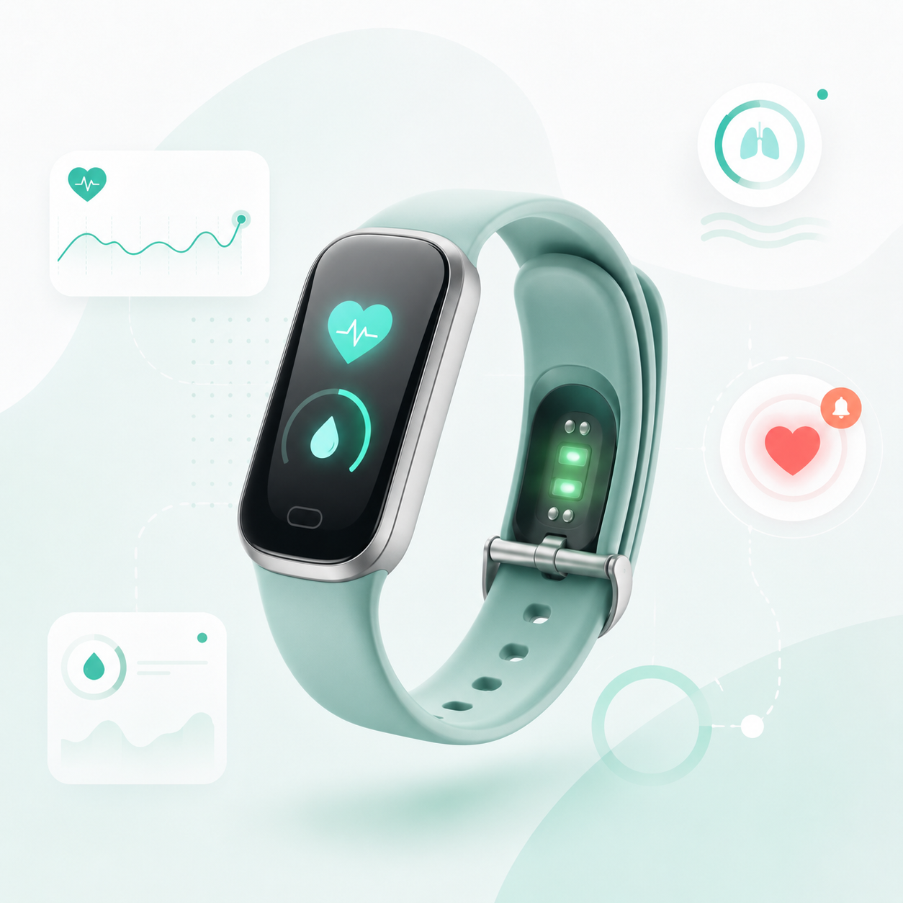
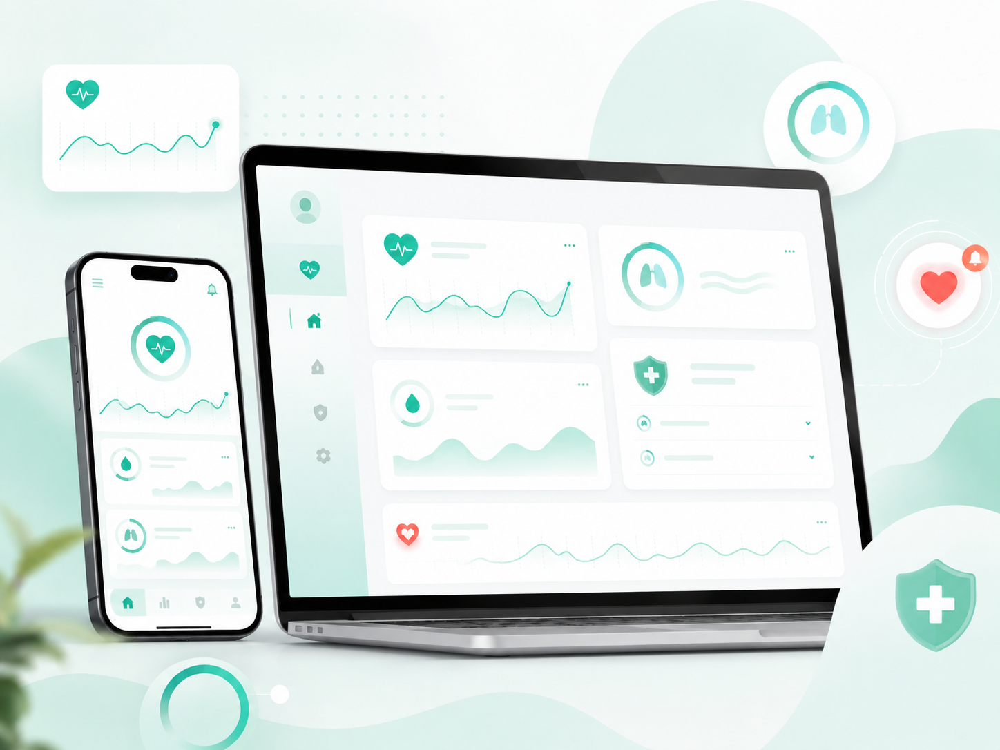
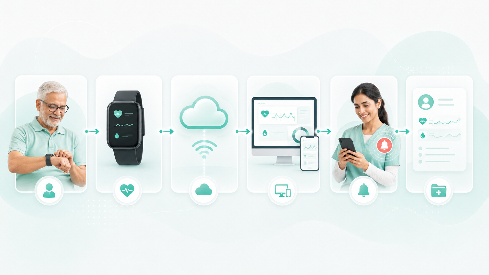

Cuida lo que más te importa
Monitorea la salud de tus seres queridos en tiempo real con tecnología IoT.
TukunTech conecta un dispositivo portátil con aplicaciones web y móviles para visualizar frecuencia cardíaca, saturación de oxígeno, alertas preventivas e historial de mediciones.
Panel del paciente
Carlos M. · 72 años78bpm
97%
Estado
EstableAlerta enviada al cuidador
Una solución conectada para el cuidado preventivo
TukunTech integra un dispositivo IoT, una plataforma web y una aplicación móvil para facilitar el monitoreo preventivo de signos vitales.


Servicios principales
Todo lo que necesitas para un monitoreo preventivo confiable.
¿Cómo funciona TukunTech?
Seis pasos simples para acompañar la salud de tu familia.

Planes diseñados para cada necesidad
Elige el plan que mejor se adapte a ti y a tu familia.
Misión y Visión
Historias de confianza
Lo que dicen pacientes, familiares y cuidadores que usan TukunTech.
Preguntas frecuentes
Nuestro equipo
Somos un equipo comprometido con el desarrollo de soluciones tecnológicas.
Video sobre el equipo
Conoce al equipo detrás de TukunTech y cómo trabajamos para desarrollar una solución de monitoreo de salud basada en tecnología IoT.
Contáctanos
Déjanos tus datos y nuestro equipo se comunicará contigo para brindarte más información.